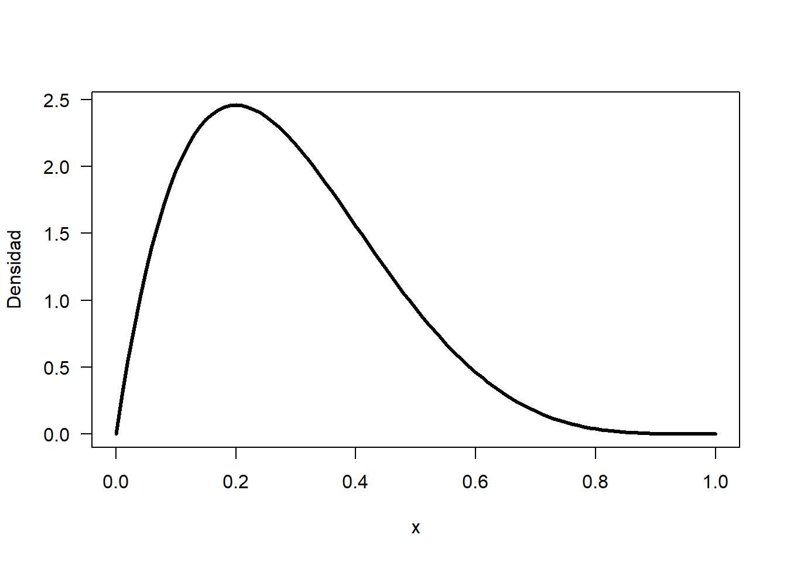
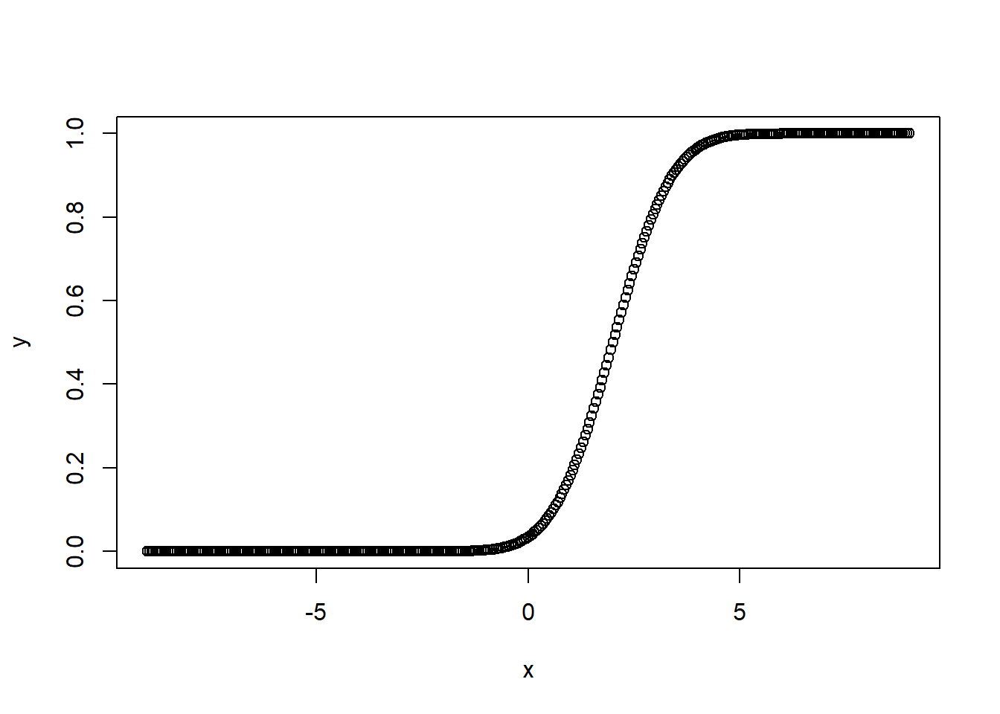

Una distribución continua describe las probabilidades de los posibles valores de una variable aleatoria continua. Una variable aleatoria continua es una variable aleatoria con un conjunto de valores posibles (conocido como el rango) que es infinito y no se puede contar.
Las probabilidades de las variables aleatorias continuas (X) se definen como el área por debajo de la curva de su PDF. Por lo tanto, solo los rangos de valores pueden tener una probabilidad diferente de cero. La probabilidad de que una variable aleatoria continua equivalga a algún valor siempre es cero.
Para cada distribución continua se tienen 4 funciones, a continuación el listado de las funciones y su utilidad
dxxx(x, ...) # Función de densidad de probabilidad, f(x)
pxxx(q, ...) # Función de distribución acumulada hasta q, F(x)
qxxx(p, ...) # Cuantil para el cual P(X <= q) = p
rxxx(n, ...) # Generador de números aleatorios.En el lugar de las letras xxx se de debe colocar el nombre de la distribución en R, a continuación el listado de nombres disponibles para las 11 distribuciones continuas básicas.
beta # Beta
cauchy # Cauchy
chisq # Chi-cuadrada
exp # Exponencial
f # F
gamma # Gama
lnorm # log-normal
norm # normal
t # t-student
unif # Uniforme
weibull # WeibullCombinando las funciones y los nombres se tiene un total de 44 funciones, por ejemplo, para obtener la función de densidad de probabilidad f(x) de una normal se usa la función dnorm( ) y para obtener la función acumulada F(x) de una Beta se usa la función pbeta( )
La distribución beta es posible para una variable aleatoria continua que toma valores en el intervalo [0,1], lo que la hace muy apropiada para modelar proporciones. En la inferencia bayesiana, por ejemplo, es muy utilizada como distribución a priori cuando las observaciones tienen una distribución binomial.
Uno de los principales recursos de esta distribución es el ajuste a una gran variedad de distribuciones empíricas, pues adopta formas muy diversas dependiendo de cuáles sean los valores de los parámetros de forma α y β, mediante los que viene definida la distribución.
Campo de variación: \[0≤x≤1\] Parámetros: \[α: parámetro -de -forma,α>0\]
\[β:parámetro -de -forma,β>0\]
R: Distribución Beta.
dbeta(x, shape1, shape2, ncp = 0, log = F) #Devuelve resultados de la función de densidad.
pbeta(q, shape1, shape2, ncp = 0, lower.tail = T, log.p = F) # Devuelve resultados de la función de distribución acumulada.
qbeta(p, shape1, shape2, ncp = 0, lower.tail = T, log.p = F) # Devuelve resultados de los cuantiles de la distribución Beta.
rbeta(n, shape1, shape2, ncp = 0)#Devuelve un vector de valores de la distribución Beta aleatorios.Los argumentos que podemos pasar a las funciones expuestas en la anterior tabla, son:
x, q: Vector de cuantiles.
p: Vector de probabilidades.
n: Números de observaciones.
shape1, shape2: Parámetros de la Distribución Beta. Shape1 = α y Shape2 = β. Ambos deben ser positivos.
ncp: Parámetro lógico que determina si la distribución es central o no.
log, log.p: Parámetro booleano, si es TRUE, las probabilidades p son devueltas como log (p).
lower.tail: Parámetro booleano, si es TRUE (por defecto), las probabilidades son P[X ≤ x], de lo contrario, P[X > x].
Considere que una variable aleatoria X se distribuye beta con parámetros shape1=2 y shape2=5 Dibuje la densidad de la distribución.
La función dbeta sirve para obtener la altura de la curva de una distribución beta y combinándola con la función curve se puede dibujar la densidad solicitada.
curve(dbeta(x, 2, 5), lwd=3, las=1, ylab='Densidad')
En este apartado, se explicarán las funciones existentes en R para obtener resultados que se basen en la distribución Gamma.
Para obtener valores que se basen en la distribución Gamma, R, dispone de cuatro funciones:
dgamma(x, shape, rate, scale = 1/rate, log = F)# Devuelve resultados de la función de densidad.
pgamma(q, shape, rate, scale = 1/rate, lower.tail = T, log.p = F) #Devuelve resultados de la función de distribución acumulada.
qgamma(p, shape, rate, scale = 1/rate, lower.tail = T, log.p = F) #Devuelve resultados de los cuantiles de la distribución Gamma.
rgamma(n, shape, rate, scale = 1/rate) # Devuelve un vector de valores de la distribución Gamma aleatorios.Los argumentos que podemos pasar a las funciones expuestas en la anterior tabla, son:
x, q: Vector de cuantiles.
p: Vector de probabilidades.
n: Números de observaciones.
rate: Alternativa para especificar el valor de escala (Scale). Por defecto, su valor es igual a 1.
shape, scale: Parámetros de la Distribución Gamma. Shape = a y Scale = s = 1/rate. Debe ser estrictamente positivo el parámetro Scale.
log, log.p: Parámetro booleano, si es TRUE, las probabilidades p son devueltas como log (p).
lower.tail: Parámetro booleano, si es TRUE (por defecto), las probabilidades son P[X ≤ x], de lo contrario, P[X > x].
En cierta ciudad el consumo diario de energía eléctrica, en millones de kilovatios por hora, puede considerarse como una variable aleatoria con distribución Gamma de parámetros α = 3 y β = 0.5.
La planta de energía de esta ciudad tiene una capacidad, suficiente diaria de 10 millones de kW/hora, determinar la probabilidad de que este abastecimientos sea: Se consuman entre 3 y 8 millones de kW/hora.
Nos piden, la probabilidad: P(3 <X <8), empleamos para tal propósito, la función de distribución con el área de cola hacia la izquierda y la alternativa para especificar el valor de escala:
pgamma(8, 3, rate = 0.5, lower.tail = T) - pgamma(3, 3, rate = 0.5, lower.tail = T)## [1] 0.5707435La distribución exponencial es una distribución de probabilidad continua que se utiliza para modelar el tiempo o espacio entre eventos en un proceso de Poisson.
La distribución exponencial es la distribución de probabilidad del tiempo o espacio entre dos eventos en un proceso de Poisson, donde los eventos ocurren de manera continua e independiente a una tasa constante λ.
Para obtener valores que se basen en la distribución Exponencial, R, dispone de cuatro funciones:
dexp(x, rate = 1, log = F) #Devuelve resultados de la función de densidad.
pexp(q, rate = 1, lower.tail = T, log.p = F) #Devuelve resultados de la función de distribución acumulada.
qexp(p, rate = 1, lower.tail = T, log.p = F) #Devuelve resultados de los cuantiles de la distribución Exponencial.
rexp(n, rate = 1) #Devuelve un vector de valores de la distribución Exponencial aleatoriosLos argumentos que podemos pasar a las funciones expuestas en la anterior tabla, son
x, q: Vector de cuantiles.
p: Vector de probabilidades.
n: Números de observaciones.
rate: Vector de tasas. Hay que tener en cuenta que: rate = 1/β
log, log.p: Parámetro booleano, si es TRUE, las probabilidades p son devueltas como log(p).
lower.tail: Parámetro booleano, si es TRUE (por defecto), las probabilidades son P[X ≤ x], de lo contrario, P[X > x]
Supongamos que la cantidad de tiempo que uno pasa en un banco se distribuye exponencialmente con una media de 10 minutos,λ= 1/10 ¿Cuál es la probabilidad de que un cliente pase más de 15 minutos en el banco si aún está en el banco? después de 10 minutos?
\[P(X>15|X>10)=P(X>5)=e^{-1/2} = 0.606\]
pexp(5,rate=1/10,lower.tail = FALSE) # o 1- Pexp(5,rate=1/10,lower.tail = TRUE)## [1] 0.6065307Entre las variables aleatorias continuas, la más importante es la distribución normal o gaussiana. Esta variable fue introducida por Carl Friedrich en el siglo XIX para estudiar las medidas de error.
Sea X∼N(μ,σ), es decir, una variable aleatoria con distribución normal de media μ y desviación típica σ:
La función de densidad, también conocida como campana de Gauss, de x es: \[f(x)=\frac{1}{\sqrt{2πσ^{2}}} e^{(1/2)( \frac{x-μ}{σ})^{2}}\]
La función de distribución acumulada \[F(x)=P(X≤x)\]
La esperanza y la varianza es \[E(X)=μ ; Var(X)=σ^{2}\]
donde:
μ es la media de la distribución (también la mediana y el modo).
σ es la desviación estándar
(σ>0).
σ^2 varianza
Para obtener valores que se basen en la distribución Normal, R, dispone de cuatro funciones:
dnorm(x, mean = 0, sd = 1, log = F)# Devuelve resultados de la función de densidad.
pnorm(q, mean = 0, sd = 1, lower.tail = T, log.p = F) #Devuelve resultados de la función de distribución acumulada.
qnorm(p, mean = 0, sd = 1, lower.tail = T, log.p = F) #Devuelve resultados de los cuantiles de la Normal.
rnorm(n, mean = 0, sd = 1)# Devuelve un vector de valores de la Normal aleatorios.Los argumentos que podemos pasar a las funciones expuestas en la anterior tabla, son:
x, q: Vector de cuantiles.
p: Vector de probabilidades.
n: Números de observaciones.
mean: Vector de medias. Por defecto, su valor es 0.
sd: Vector de desviación estándar. Por defecto, su valor es 1.
log, *log.p: Parámetro booleano, si es TRUE, las probabilidades p son devueltas como log(p).
lower.tail: Parámetro booleano, si es TRUE (por defecto), las probabilidades son P[X ≤ x], de lo contrario, P[X > x].
En el siguiente ejemplo, observamos la gráfica de la función de distribución acumulada para una variable aleatoria X que tiene distribución normal con parámetros μ=2 y σ=1.1:
# Crear una sucesión de números entre -9 y 9, aumentando en 0.05.
x <- seq(-9, 9, by = 0.05)
# Suponiendo que los parámetros son: mu=2 y sigma=1.1.
y <- pnorm(x, mean = 2, sd = 1.1)
# Gráfica de la densidad normal
plot(x,y)
Si X es una variable normal con media μ=50 y varianza σ^2=100, calcule la probabilidad de que X se encuentre entre -60 y 60.
La probabilidad de que X se encuentre entre -60 y 60 (ambos inclusive) es: \[\begin{eqnarray*} P(|X| \leq 60) &=& P(-60 \leq X \leq 60)\; =\; P(X\leq 60) \; - \; P(X\leq -60) \\ &=& P\Big(Z \leq \frac{60-50}{10}\Big) \; - \; P\Big(Z \leq \frac{-60-50}{10}\Big)\\ &=& P(Z \leq 1) - P(Z\leq -11) = 0.8413 - 0 \; =\; 0.8413 \end{eqnarray*}\]
pnorm(60,50,sqrt(100))-pnorm(-60,50,sqrt(100))## [1] 0.8413447la distribución T de Student es una distribución de probabilidad que surge del problema de estimar la media de una población normalmente distribuida cuando el tamaño de la muestra es pequeño y la desviación estándar poblacional es desconocida
Existe la fórmula para calcular el valor de t en la distribuciones T Student.. Se usa la siguiente fórmula para transformar distribuciones normales a t.
\[t=\frac{\bar{x}-u}{\frac{s}{\sqrt{n}}}\] donde:
\[\bar{x}\text{=media muestral}\]
\[μ \text{=media poblacional}\]
\[s\text{=desviación estándar de la muestra}\]
\[n\text{=número de elementos de la muestra}\]
Para obtener valores que se basen en la distribución t-Student, R, dispone de cuatro funciones:
dt(x, df, ncp, log = F)# Devuelve resultados de la función de densidad.
pt(q, df, ncp, lower.tail = T, log.p = F)# Devuelve resultados de la función de distribución acumulada.
qt(p, df, ncp, lower.tail = T, log.p = F) #Devuelve resultados de los cuantiles de la t-Student.
rt(n, df, ncp)# Devuelve un vector de valores de la t-Student aleatorios.Los argumentos que podemos pasar a las funciones expuestas en la anterior tabla, son:
x, q: Vector de cuantiles.
p: Vector de probabilidades.
n: Números de observaciones.
df: Grados de libertad.
ncp: Parámetro que determina la centralidad de la gráfica t-Student. Si se omite, el estudio se realiza con la gráfica centralizada en 0.
log, log.p: Parámetro booleano, si es TRUE, las probabilidades p son devueltas como log(p).
lower.tail: Parámetro booleano, si es TRUE (por defecto), las probabilidades son P[X ≤ x], de lo contrario, P[X > x]
Un Gerente de mall desea estimar la cantidad media que gastan los clientes que visitan el centro comercial. Una muestra de 20 clientes revela las siguientes cantidades: 48.16, 42.22,46.82, 51.45, 23.78, 41.86, 54.86, 37.92, 52.64, 48.59, 50.82, 46.94, 61.83, 61.69, 49.17, 61.46, 51.35, 52.68, 58.84, 43.88
datos:
dato <- c(48.16, 42.22, 46.82, 51.45, 23.78, 41.86, 54.86, 37.92, 52.64, 48.59, 50.82, 46.94, 61.83, 61.69, 49.17, 61.46, 51.35, 52.68, 58.84, 43.88)
media <- round(mean(dato),4)
desviacion <- round(sd(dato),)
n <- length(dato)
confianza <- 0.95Construir una tabla de datos
tabla <- data.frame(variables = c("n", "Grados libertad", "Media muestra", "Desv.Std muestra", "Media Pob.", "Confianza"), datos = c(n, (n-1), media, desviacion, NA, confianza))
tabla## variables datos
## 1 n 20.000
## 2 Grados libertad 19.000
## 3 Media muestra 49.348
## 4 Desv.Std muestra 9.000
## 5 Media Pob. NA
## 6 Confianza 0.950Valor de t real
t <- qt(p = (1 - confianza) / 2, df = n-1) # dos colas
t <- abs(t)
t## [1] 2.093024